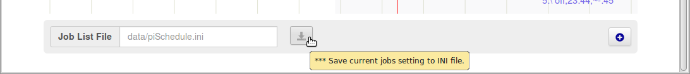

Aktueller Tagesplan als Timeline vers.0.7.5.1 2017-01-11_15


Timeline ist eine alternative Art die
Jobs -- also EIN/AUS Schaltzeiten sowie Zufallszeiten -- für ein
Gerät am Bildschirm zu zeigen und das Ändern zu ermöglichen.
- Darstellung aller Job Definitionen eines ausgewählten Gerätes als interaktive Job-Balken mit Legende
- Dargestellter Zeitbereich ist definiert durch Startparameter;
'prefs' Aufrufe auf der Browser Seite zum Ändern stehen zur Verfügung:/startTime?hh:mmund/endTime?hh:mm - Navigation mit Tasten für Timeline Zoom In/Out, Verschieben, Rücksetzen, Geräteauswahl durch Menü
- Taste [Legende] änderte die Position der Legende der Jobdefinitionen bzw. schaltet sie aus
- Umschalter EIN/AUS zeigt den aktuellen Status des ausgewählten Gerätes an und ermöglicht auch das direkte Schalten
- Roter Cursor zeigt die aktuelle Zeit des letzten Aufrufes bzw. Bedienung
- Blauer Cursor dient als Pointer; Einschalten durch Anklicken, er lässt sich dann auf eine andere Position ziehen um besondere Situationen im Schaltplan mit der Uhrzeit zu zeigen
- Klick auf die Kopfzeile führt zurück auf die vorherige Seite
Job-Balken - Darstellung und Funktionen
Für alle Geräte in der gewählten Job-Listen (INI) Datei werden die
definierten Jobs grafisch als Balken mit Legende dargestellt, wobei
jeweils die Menüauswahl ein Gerät zur Anzeige bestimmt.
Eine Balkengruppe zeigt jeweils einen definierten EIN/AUS Schaltvorgang und ggf. die Zufallswerte an mit
- oranger Balken: EIN bis AUS Zeitpunkt
- grüner Balken: Zufallszeit/Zeitverschiebung zum Einschalten
- blauer Balken: Zufallszeit/Zeitverschiebung zum Ausschalten
- oranger Punkt: Zeitpunkt des Einschaltens, es ist keine
zugehörige AUS Zeit definiert
- schwarzer Punkt: Zeitpunkt des Ausschaltens, keine EIN Zeit definiert
-
Balken antippen/auswählen zeigt die EIN/AUS Zeiten als Cursor mit Zeiten
⇒ Verschieben der EIN/AUS Zeiten mit Cursor/Mausklick am Bildschirm und ändern dieser Job Zeiten
⇒ Cursor/Funktionen ebenfalls für Zufallszeiten
Legenden an den Job-Balken

-
Über die 'Legenden' an den Balken lässt sich mittels Cursor/Mausklick eine weitere Box öffnen. Diese zeigt den ausgewählten Job mit zusätzlichen Bedienelementen an.
-
Job 'Ändern'
Eingaben erfolgen im Textmodus. Dies versteht sich als Experten Modus!
Achtung: Fehlerhafte Syntax wird im Moment nicht abgefangen! - Job 'Einfügen'
Der angezeigte Job wird dupliziert und vor dem aktuellen Job in die Job-Liste eingefügt. - Job 'Löschen'
Der angezeigte Job wird aus der Job-Liste gelöscht
Box zum Speichern / Neuer Job

- Speichern der Änderungen
Die Änderungen in der Timeline Anzeige sind temporär solange diese nicht in die angegebene Job-Liste (INI Datei) gespeichert werden. Mit Änderung/Hinzufügen eines Job wird der Knopf zum Speichern aktiviert.
Die Aktivierung der Änderungen an der Job-Liste erfolgt erst durch erneutes Laden auf der Seite "Aktueller Tagesplan". - Ein [ + ] Element dient zum Hinzufügen eines neuen, vordefinierten Jobs für das gewählte Gerät, seine Position ist jeweils am Anfang der Job-Liste.
Timeline Aufruf
Timeline wird mittels eines Menüpunktes auf der Seite "piSchedule -- Aktueller Tagesplan" geöffnet

Timeline -- Allgemeine Hinweise
- Timeline kann auch auf mobilen Geräten mit Touchscreen verwendet werden. Statt mit dem Cursor/der Maus zu steuern, kann der Finger oder ein Zeigestift verwendet werden.
- Timeline als neue Funktion kann ohne weiteres im Alltagseinsatz eingesetzt werden.
Rückmeldungen bzgl. Funktionalität, Form, Farben etc gerne über das piSchedule Forum.
Dies ist am besten erreichbar aus dem laufenden piSchedule auf der Seite "/home" unter dem Menüpunkt [Hilfe] --> [Über piSchedule] und dort [Neuer Forumsbeitrag]
Ein direkter Weg ist auch -- allerdings ohne Installationsdetails -- https://groups.google.com/forum/#!forum/piSchedule7
Bekannte Probleme mit Timeline
- ist die Bildschirmanzeige normal über den Browser gezoomt, ermittelt der blaue Cursor falsche Positionen/Zeiten
- die piSchedule Timeline Anzeige skaliert nicht mit Ändern der Größe des Browserfensters, ein Neuladen der Seite ist erforderlich. Gilt auch für das Drehen eines mobilen Gerätes.